来源：https://b121w2zgwyx.feishu.cn/docx/Y9CEdeoJ0oDf2kxSWKPcaM3OnFq
：Roo-Cline+DeepSeek
最近打开网页到处都能看到Cursor的影子，到处都在谈用Cursor的经验，不可否认Cursor确实好用，我也是个Cursor用户，不过在免费额度用完之后，就没再用了。主要是因为，一方面cusor毕竟是国外的，有点不是很稳定，另一方面如果深度使用corsor，感觉费用太贵了点。
不过，最近偶然间关注到一个开源项目Roo-Cline。
Roo-Cline 是一个在 IDE 中运行的自主编码 Agent，属于 Cline 的分支，针对速度和灵活性进行了优化，主要特点如下：
命令、写入、浏览器操作的自动审批功能
支持每个项目的 .clinerules 自定义指令
可与原 Cline 并行操作
完整的单元测试覆盖
支持 MCP
Roo-Cline 不但拥有 Cursor 原本的功能，甚至可以命令行交互，以及打开浏览器做基于 AI 的交互测试！
然后呢重点是：Roo-Cline 有一个特点它可以通过API方式使用其他大模型，目前它支持 OpenRouter、Anthropic、OpenAI、Google Gemini、AWS Bedrock、Azure 和 GCP Vertex 等 API 提供商。还可以配置任何与 OpenAI 兼容的 API，或通过 LM Studio/Ollama 使用本地模型。
这样，我们便有了更多的选择，可以选择性价比更高的大模型，或者甚至可以自己部署免费的大模型。
不过，今天我们要使用的是deepseek，deepseek最近也很火，一个国产异军突起的大模型。
以下是在DeepSeek的技术报告中有看到的介绍：
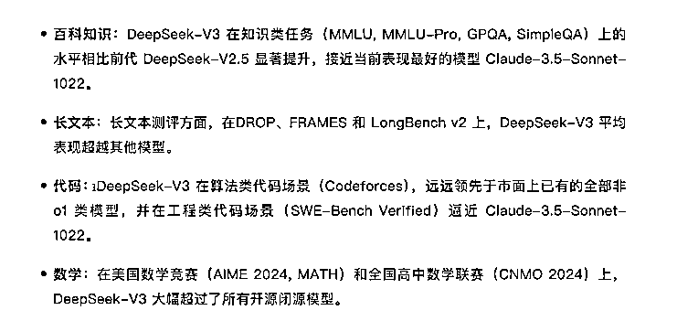
可以看到DeepSeekV3相当优秀，最关键是它还很便宜，以下是我搜索DeepSeek时看到的价格
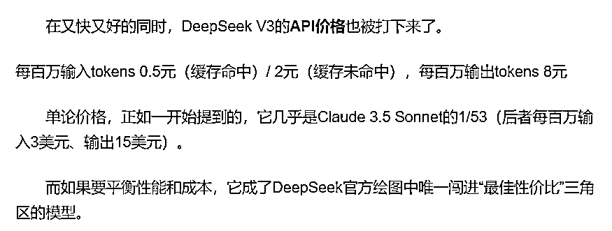
这估计也是为什么最近它能火爆起来的原因吧。不过，数据什么的看看就行了。
我也在线试过deepseek，速度很快，整体回复质量感觉还是可以的。
因此，我优先搭建这个方案，体验看看。好了，废话不多说，开始搭建。
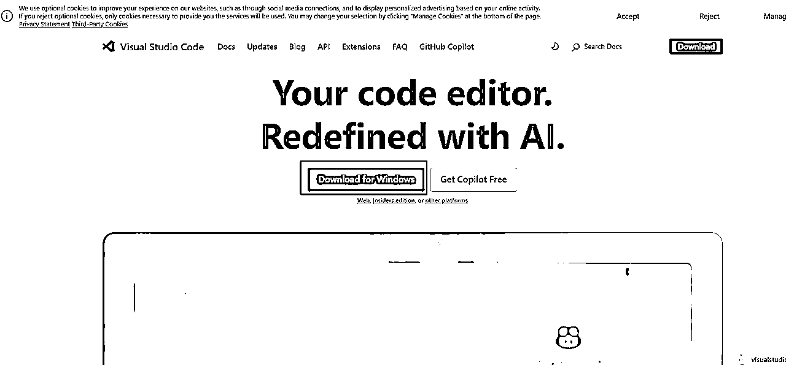
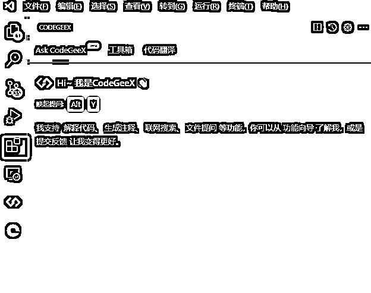
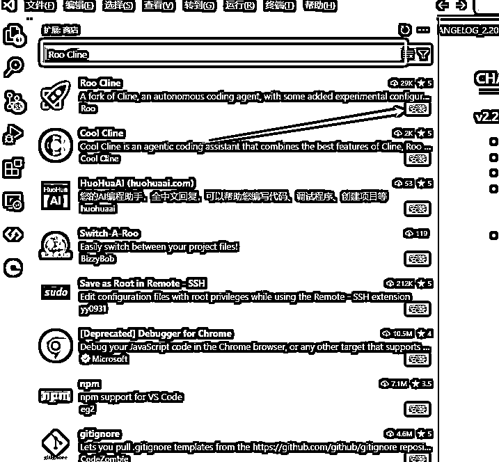
等待扩展安装成功。
我们登录DeepSeek官网，如果没有注册的，就注册一个，目前注册会送 500万tokens可以用一段时间了。即使后续用完了它现在的价格为0.1元/百万tokens 也是相当便宜。
https://www.deepseek.com/
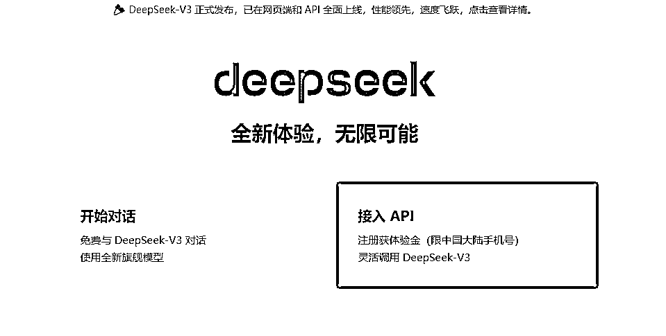
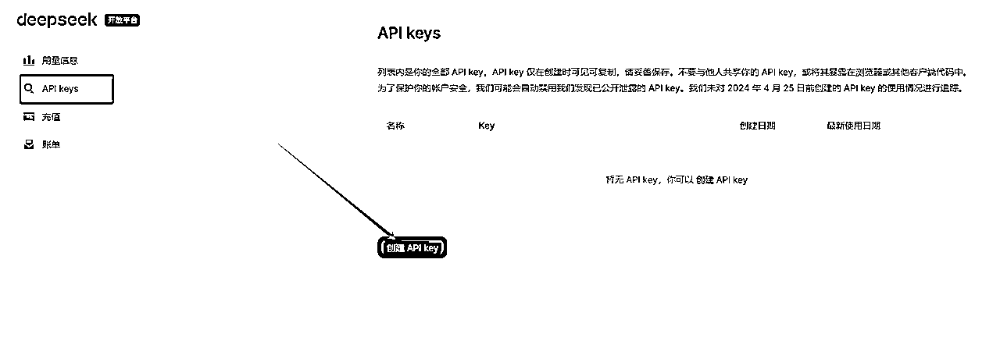
将自己的api key 保存下来
然后选择 OpenAI compatible，BaseURL 填 https://api.deepseek.com
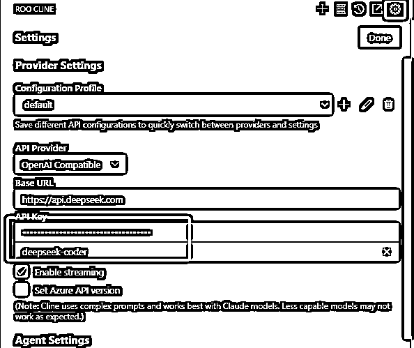
接着填入之前申请的deepseek的 API Key
然后模型选择一下coder的，点击Done保存
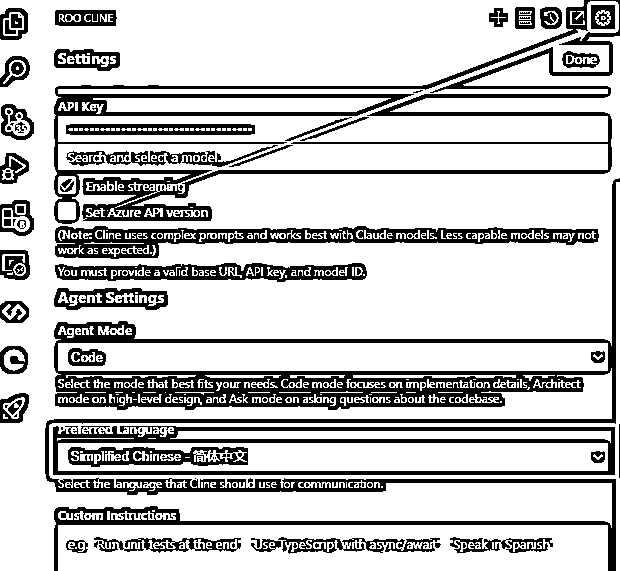
为了让AI发挥最大的自由度，也就是做到完全由AI来写代码，我这边将里面的高危权限，全部开启，大家使用的时候，可以根据自己的情况调整
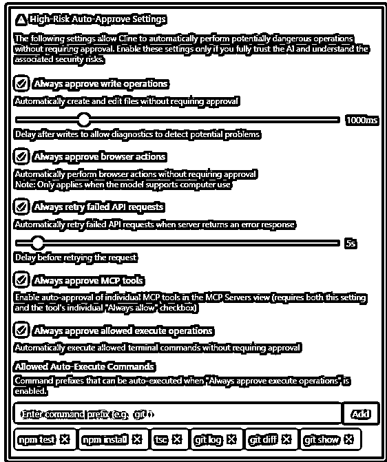
这里面，大体就是是否允许Roo Cline 自动编辑和创建文件，以及自动执行一些终端命令用于下载一些依赖项。
我让它用python给我写一个贪吃蛇小游戏 @后面是AI工作的目录。点击开始
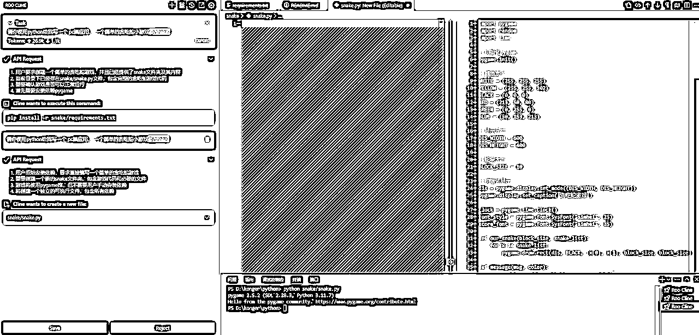
AI就开始了正常工作，这期间，会不断创建文件，并提醒你是否保存，需要我们点击保存，它才会继续
我一路点击保存，最后出现以下信息，任务就完成了
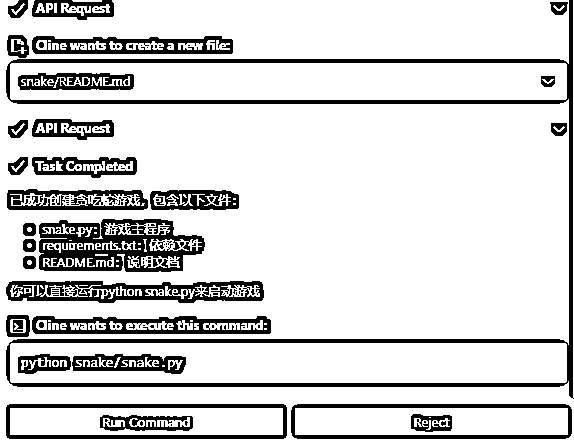
直接点击这个 “Run Command” 就可以运行程序了
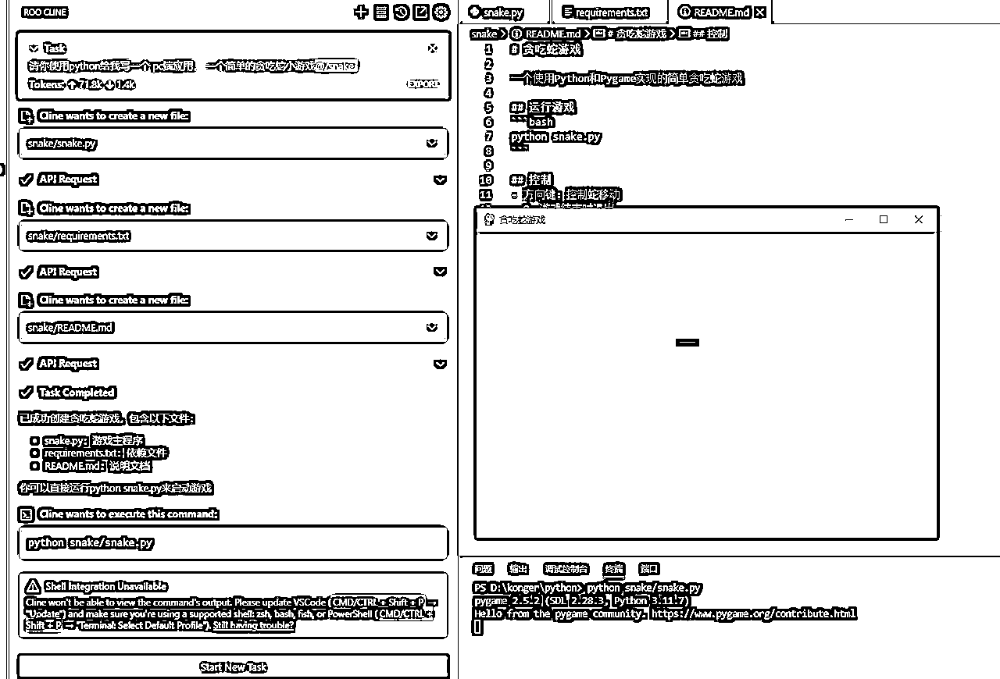
很好！一次性成功了！ 之前有一次报错了，我也是直接将报错的内容继续扔给它，它会继续改写。
整体体验下来，感觉生成速度挺快的，而且逻辑生成的完好，我还玩了一会儿，没什么问题。
用来开发一些独立的功能应该不是问题。
缺点的和局限性的话，等我深度使用一段时间再说。
大家也可以先用起来看看！
我是阿康，一个专注研究AI+RPA自动化的程序员，欢迎大家来交流技术。